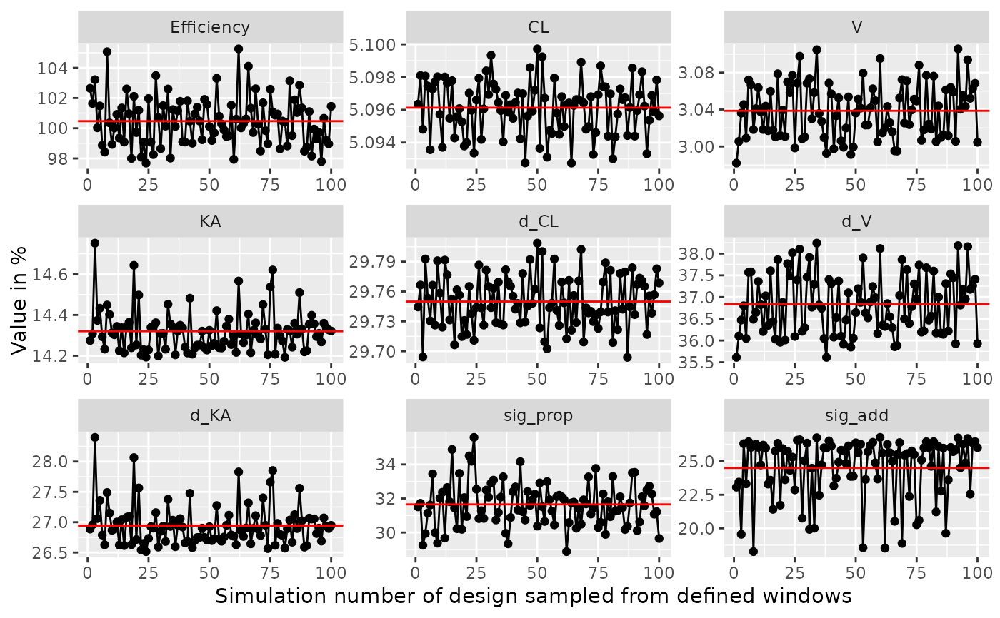

Function plots the efficiency of windows around the sample time points.
The function samples from a uniform distribution around the sample time
points for each group (or each individual with deviate_by_id=TRUE,
with slower calculation times) and compares the results with the
design defined in poped.db. The maximal and minimal allowed values for all design variables as
defined in poped.db are respected (e.g. poped.db$design_space$minxt and
poped.db$design_space$maxxt).
Usage
plot_efficiency_of_windows(
poped.db,
xt_windows = NULL,
xt_plus = xt_windows,
xt_minus = xt_windows,
iNumSimulations = 100,
y_eff = TRUE,
y_rse = TRUE,
ofv_calc_type = poped.db$settings$ofv_calc_type,
mean_line = TRUE,
mean_color = "red",
deviate_by_id = FALSE,
parallel = F,
seed = round(runif(1, 0, 1e+07)),
...
)Arguments
- poped.db
A poped database
- xt_windows
The distance on one direction from the optimal sample times. Can be a number or a matrix of the same size as the xt matrix found in
poped.db$design$xt.- xt_plus
The upper distance from the optimal sample times (xt + xt_plus). Can be a number or a matrix of the same size as the xt matrix found in
poped.db$design$xt.- xt_minus
The lower distance from the optimal sample times (xt - xt_minus). Can be a number or a matrix of the same size as the xt matrix found in
poped.db$design$xt.- iNumSimulations
The number of design simulations to make within the specified windows.
- y_eff
Should one of the plots created have efficiency on the y-axis?
- y_rse
Should created plots include the relative standard error of each parameter as a value on the y-axis?
- ofv_calc_type
OFV calculation type for FIM
1 = "D-optimality". Determinant of the FIM: det(FIM)
2 = "A-optimality". Inverse of the sum of the expected parameter variances: 1/trace_matrix(inv(FIM))
4 = "lnD-optimality". Natural logarithm of the determinant of the FIM: log(det(FIM))
6 = "Ds-optimality". Ratio of the Determinant of the FIM and the Determinant of the uninteresting rows and columns of the FIM: det(FIM)/det(FIM_u)
7 = Inverse of the sum of the expected parameter RSE: 1/sum(get_rse(FIM,poped.db,use_percent=FALSE))
- mean_line
Should a mean value line be created?
- mean_color
The color of the mean value line.
- deviate_by_id
Should the computations look at deviations per individual instead of per group?
- parallel
Should we use parallel computations (T/F)? Other options can be defined in this function and passed to
start_parallel. See especially the optionsdllsandmrgsolve_modelfrom that function if you have a model defined with compiled code or are using mrgsolve.- seed
The random seed to use.
- ...
Extra arguments passed to
evaluate.fim
Value
A ggplot object.
See also
Other evaluate_design:
evaluate.fim(),
evaluate_design(),
evaluate_power(),
get_rse(),
model_prediction(),
plot_model_prediction()
Other Simulation:
model_prediction(),
plot_model_prediction()
Other Graphics:
plot_model_prediction()
Examples
library(PopED)
############# START #################
## Create PopED database
## (warfarin model for optimization)
#####################################
## Warfarin example from software comparison in:
## Nyberg et al., "Methods and software tools for design evaluation
## for population pharmacokinetics-pharmacodynamics studies",
## Br. J. Clin. Pharm., 2014.
## Optimization using an additive + proportional reidual error
## to avoid sample times at very low concentrations (time 0 or very late samples).
## find the parameters that are needed to define from the structural model
ff.PK.1.comp.oral.sd.CL
#> function (model_switch, xt, parameters, poped.db)
#> {
#> with(as.list(parameters), {
#> y = xt
#> y = (DOSE * Favail * KA/(V * (KA - CL/V))) * (exp(-CL/V *
#> xt) - exp(-KA * xt))
#> return(list(y = y, poped.db = poped.db))
#> })
#> }
#> <bytecode: 0x560c76c80270>
#> <environment: namespace:PopED>
## -- parameter definition function
## -- names match parameters in function ff
sfg <- function(x,a,bpop,b,bocc){
parameters=c(CL=bpop[1]*exp(b[1]),
V=bpop[2]*exp(b[2]),
KA=bpop[3]*exp(b[3]),
Favail=bpop[4],
DOSE=a[1])
return(parameters)
}
## -- Define initial design and design space
poped.db <- create.poped.database(ff_fun=ff.PK.1.comp.oral.sd.CL,
fg_fun=sfg,
fError_fun=feps.add.prop,
bpop=c(CL=0.15, V=8, KA=1.0, Favail=1),
notfixed_bpop=c(1,1,1,0),
d=c(CL=0.07, V=0.02, KA=0.6),
sigma=c(prop=0.01,add=0.25),
groupsize=32,
xt=c( 0.5,1,2,6,24,36,72,120),
minxt=0.01,
maxxt=120,
a=c(DOSE=70),
mina=c(DOSE=0.01),
maxa=c(DOSE=100))
############# END ###################
## Create PopED database
## (warfarin model for optimization)
#####################################
# Examine efficiency of sampling windows at plus/minus 0.5 hours from
# sample points in the design
plot_efficiency_of_windows(poped.db,xt_windows=0.5)

if(interactive()){
plot_efficiency_of_windows(poped.db,
xt_plus=c( 0.5,1,2,1,2,3,7,1),
xt_minus=c( 0.1,2,5,4,2,3,6,2))
plot_efficiency_of_windows(poped.db,xt_windows=c( 0.5,1,2,1,2,3,7,1))
plot_efficiency_of_windows(poped.db,
xt_plus=c( 0.5,1,2,1,2,3,7,1),
xt_minus=c( 0.1,2,5,4,2,3,6,2),
y_rse=FALSE)
plot_efficiency_of_windows(poped.db,
xt_plus=c( 0.5,1,2,1,2,3,7,1),
xt_minus=c( 0.1,2,5,4,2,3,6,2),
y_eff=FALSE)
}